Departamento de Matematica - UBA
Homologia Persistente y Aplicaciones
XIMENA FERNANDEZ
City University of London

Los datos suelen tener topologias no triviales
Los datos suelen tener topologias no triviales
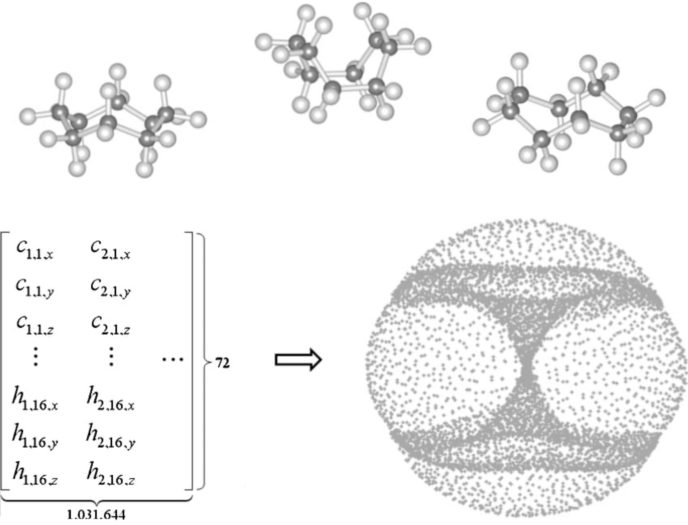Topology of cyclo-octane energy landscape. J Chem Phys. 2010 Jun 21;132(23):234115.
Los datos suelen tener topologias no triviales

On the Local Behavior of Spaces of Natural Images. Int J Comput Vis 76, 1–12 (2008).
Los datos suelen tener topologias no triviales

Toroidal topology of population activity in grid cells. Nature 602, 123–128 (2022).
Análisis topológico de datos
APLICACIONES
DONUTAPLICACIONES
Persistent homology in simplectic geometry-
L. Polterovich et.al. 'Topological persistence in geometry and analysis'. American Mathematical Society. (2020)
E. Shelukhin. 'On the Hofer-Zehnder conjecture'. Annals of Mathematics. (2022)
We prove that if a Hamiltonian diffeomorphism of a closed monotone symplectic manifold with semisimple quantum homology has more contractible fixed points, counted homologically, than the total dimension of the homology of the manifold, then it must have an infinite number of contractible periodic points. This constitutes a higher-dimensional homological generalization of a celebrated result of Franks from 1992, as conjectured by Hofer and Zehnder in 1994.
Aplicacion 1:
Series Temporales
Sistemas dinámicos
- Un sistema dinámico continuo es $(X, \phi)$, con $X$ un espacio topológico y $\phi_t \colon X \to X$ una familia suave de funciones de evolución para $t \in \mathbb{R}$.
- Un conjunto $A \subset X$ es un atractor si es un estado asintótico del sistema. Concretamente, dado $( M, \phi)$ un sistema dinámico y $x_0\in M$, \[ A_{x_0} = \{x\in M: \exists t_i\to \infty \text{ tal que } \phi_{t_i}(x_0)\to x\}. \]

Series temporales
- Señal
$\varphi:\mathbb R \to \mathbb{R}$

Suponemos que $\varphi$ es una observación de un sistema dinámico subyacente $( M, \phi)$.
Es decir, existen una función de observación $F: M \to \mathbb R$ y un estado inicial $x_0 \in M$ tales que \[\begin{align*} \varphi = \varphi_{x_0}:\mathbb{R}& \to \mathbb{R}, \\ t &\mapsto F(\phi_t(x_0)) \end{align*} \]
Dato: Es posible reconstruir topológicamente el atractor a partir de la observación.
Series temporales ü§ù Sistemas Dinamicos
- Señal
$\varphi:\mathbb R \to \mathbb{R}$
- Delay embedding: Dado $T$ el time delay y $D$ la dimensión del embedding: \[ {M}_{T,D} = \{\big(\varphi(t), \varphi(t+T), \varphi(t+2 T), \dots, \varphi(t+(D-1)T)\big): t\in \mathbb R\}\subseteq \mathbb{R}^D \]

Series temporales ü§ù Sistemas Dinamicos
- Señal
$\varphi:\mathbb R \to \mathbb{R}$
- Delay embedding: Dado $T$ el time delay y $D$ la dimensión del embedding: \[ {M}_{T,D} = \{\big(\varphi(t), \varphi(t+T), \varphi(t+2 T), \dots, \varphi(t+(D-1)T)\big): t\in \mathbb R\}\subseteq \mathbb{R}^D \]
Series temporales ü§ù Sistemas Dinamicos
- Señal
$\varphi:\mathbb R \to \mathbb{R}$
- Delay embedding: Dado $T$ el time delay y $D$ la dimensión del embedding: \[ {M}_{T,D} = \{\big(\varphi(t), \varphi(t+T), \varphi(t+2 T), \dots, \varphi(t+(D-1)T)\big): t\in \mathbb R\}\subseteq \mathbb{R}^D \]
- Atractor: dado $( M, \phi)$ un sistema dinámico y $x_0\in M$, \[ A_{x_0} = \{x\in M: \exists t_i\to \infty \text{ tal que } \phi_{t_i}(x_0)\to x\}. \]


Series temporales ü§ù Sistemas Dinamicos
- Señal
$\varphi:\mathbb R \to \mathbb{R}$
- Delay embedding: Dado $T$ el time delay y $D$ la dimensión del embedding: \[ {M}_{T,D} = \{\big(\varphi(t), \varphi(t+T), \varphi(t+2 T), \dots, \varphi(t+(D-1)T)\big): t\in \mathbb R\}\subseteq \mathbb{R}^D \]
- Atractor: dado $( M, \phi)$ un sistema dinámico y $x_0\in M$, \[ A_{x_0} = \{x\in M: \exists t_i\to \infty \text{ tal que } \phi_{t_i}(x_0)\to x\}. \]
- Teorema (Takens).* Sea $ {M}$ una variedad Riemanniana suave, compacta. Sea $T>0$ un número real y sea $D > 2\mathrm{dim}( {M})\in \mathbb{Z}$. Entonces, para $\phi \in C^2(\mathbb{R} \times {M}, {M})$, $F \in C^2( {M}, \mathbb{R})$ y $x_0 \in M$ genéricos, si $\varphi_{x_0} = F(\phi_\bullet(x_0))$ es una observación de $( M, \phi)$, entonces $ A_{x_0}$ es 'difeomorfo'$^{**}$ a $ {M}_{T,D} (\varphi_{x_0})$.
** Existe $\psi: M\to \mathbb R^{D}$ un embedding tal que $\psi|_{ A_{x_0}}: A_{x_0}\to {M}_{T,D} (\varphi_{x_0})$ es una biyección.
*Corolario 5, Detecting strange attractors in tubulence, F. Takens, 1971.
Series temporales ü§ù Sistemas Dinamicos
Observacion Delay EmbeddingSeries temporales ü§ù Sistemas Dinamicos
ObservacionAplicaciones
Anomaly detection
Electrocardiograma

Source data: PhysioNet Database https://physionet.org/about/database/
Anomaly detection
Electrocardiograma
Anomaly detection
Electrocardiograma


Anomaly detection
Electrocardiograma


Anomaly detection
Electrocardiograma
Anomaly detection
Electrocardiograma
Estimador de la 'derivada'\[\dfrac{d_b\Big(\mathrm{dgm}_1(M_{T,D}f([0,t_0])), \mathrm{dgm}_1(M_{T,D}f([0,t_1]))\Big)}{|t_0-t_1|}\]
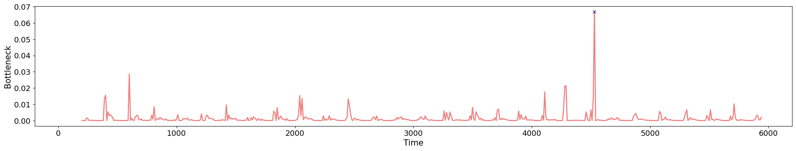
Change-points detection
Canto de pajaros

Change-points detection
Canto de pajaros

Change-points detection
Canto de pajaros
Change-points detection
Canto de pajaros


Change-points detection
Canto de pajaros
\[t\mapsto [0,t] \mapsto f[0,t] \mapsto M_{T,D}f([0,t]) \mapsto \mathrm{dgm_1}(M_{T,D}f([0,t]))\]
Change-points detection
Canto de pajaros
Estimador de la 'derivada'

Epilepsia
- EEG/MEG durante los estados preictal, ictal e interictal.

Epilepsia
- EEG/MEG durante los estados preictal, ictal e interictal.

Epilepsia
Dadas las señales $f_1, f_2, \dots f_N:[0,T]\to \mathbb{R}$, construimos un embedding en $\mathbb{R}^N$ dado por $$ \{(f_1(t), f_2(t), \dots, f_N(t)): t\in [0,T]\} $$ 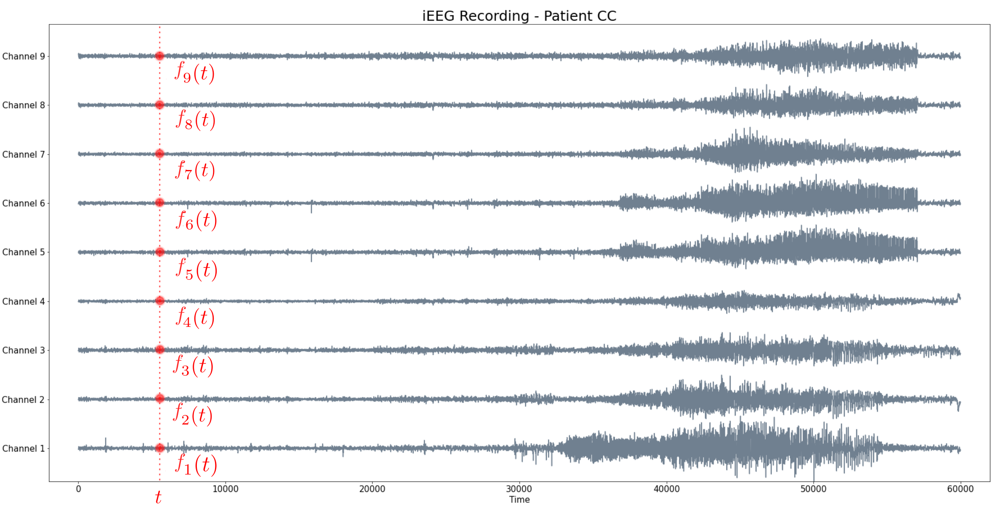Epilepsia
- Sea $f_1, f_2, \dots f_N:[0,T]\to \mathbb{R}$ un conjunto de señales.
- Dado un tamaño de ventana $W$, calculamos para cada $t\in [W,T]$ el embedding de $f_1, f_2, \dots f_N:[t-W, t]\to \mathbb{R}$ en $\mathbb{R}^N$.

Epilepsia
- Sea $f_1, f_2, \dots f_N:[0,T]\to \mathbb{R}$ un conjunto de señales.
- Dado un tamaño de ventana $W$, calculamos para cada $t\in [W,T]$ el embedding de $f_1, f_2, \dots f_N:[t-W, t]\to \mathbb{R}$ en $\mathbb{R}^N$.
Epilepsia
- Sea $f_1, f_2, \dots f_N:[0,T]\to \mathbb{R}$ un conjunto de señales.
- Dado un tamaño de ventana $W$, calculamos para cada $t\in [W,T]$ el embedding de $f_1, f_2, \dots f_N:[t-W, t]\to \mathbb{R}$ en $\mathbb{R}^N$.
- Calculamos la (homología persistente) del sliding-window embedding que evoluciona en el tiempo.

Epilepsia
- Sea $f_1, f_2, \dots f_N:[0,T]\to \mathbb{R}$ un conjunto de señales.
- Dado un tamaño de ventana $W$, calculamos para cada $t\in [W,T]$ el embedding de $f_1, f_2, \dots f_N:[t-W, t]\to \mathbb{R}$ en $\mathbb{R}^N$.
- Calculamos la (homología persistente) del sliding-window embedding que evoluciona en el tiempo.
Epilepsia
EEG $\to$ Sliding-window embedding $\to$ Camino de diagramas de persistencia $\to$ (Estimador de) primera derivadaEpilepsia
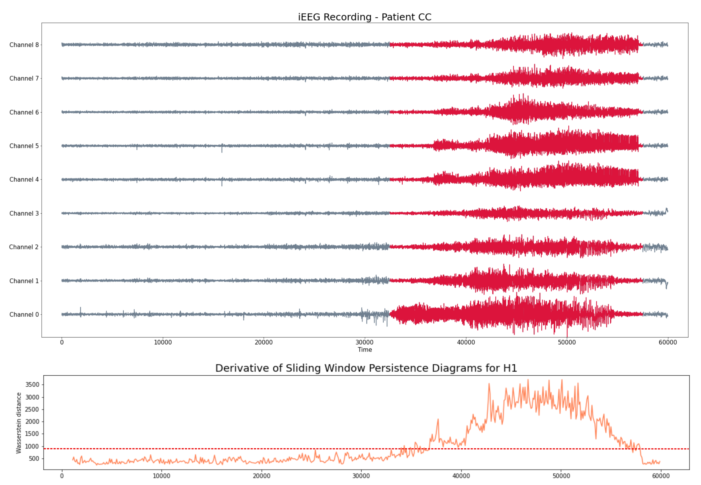Epilepsia
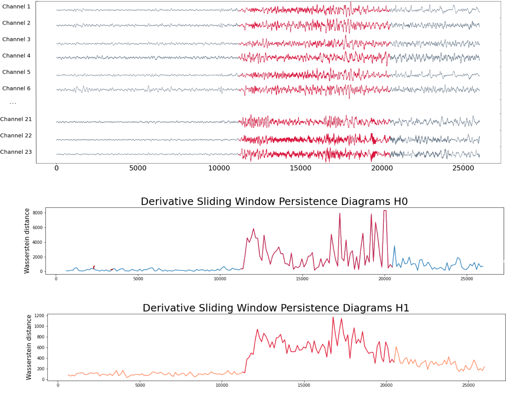Aplicacion 2:
Imagenes/Audio
El Problema
Pueden reconocer las siguientes canciones?
$~~~~~~~~~~$
El Problema
Pueden reconocer las siguientes canciones?
$~~~~~~~~~~$
Problema: Dadas dos pistas de audio, identificar si corresponden al mismo contenido de audio.
Representación de audio
Representación de audio
- Waveform: Una función continua $s\colon[0,T] \to \mathbb{R}$.


Representación de audio
-
Transformada de Fourier (discreta): Dados valores de tiempo equi-espaciados de la señal $(s_n)_{n=1}^{N}$ en $[0,T]$ y una discretización del rango de frecuencias $\{f_m\}_{m=1}^{M}$, la magnitud de la frecuencia $f_m$ alrededor de $t_n$ está dada por
\[
\widehat{S} (n, m) = \sum_{k=-\infty}^\infty s_k \omega_{k-n}\exp\left(-i k f_m\right),
\]
donde $(\omega_k)_k$ es una versión discreta de una función ventana.

Representación de audio


Identificación de fingerprints de audio
Identificación de fingerprints de audio
Shazam (2003)

Identificación de fingerprints de audio
Shazam (2003)
- Detección de maximos locales:
Para cada $n,m$, comparar $\widehat{S}(n,m)$ con el promedio de intensidades en un entorno $N(n,m)$.
Identificar $(n,m)$ tal que $\widehat{S}(n,m) > \sum_{(n',m') \in N(n,m)} \widehat{S}(n',m')$.
Identificación de fingerprints de audio
- Fingerprint: For cada maximo local (anchor point) $P$ a tiempo $t_P$ y cada maximo local $Q$ en la zona target a tiempo $t_Q$, calcular $(f_P, f_Q, t_Q-t_P)$, $t_P$.


Comparación de pistas de audio
Shazam (2003)
- Matching: Dadas dos pistas, matchear pares de fingerprints que coincidan.
 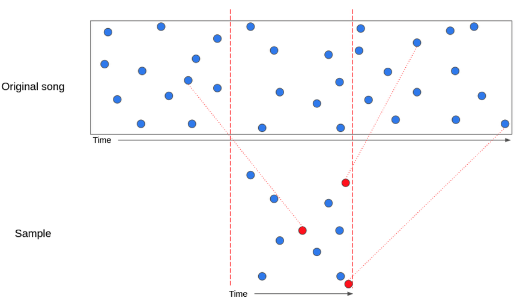
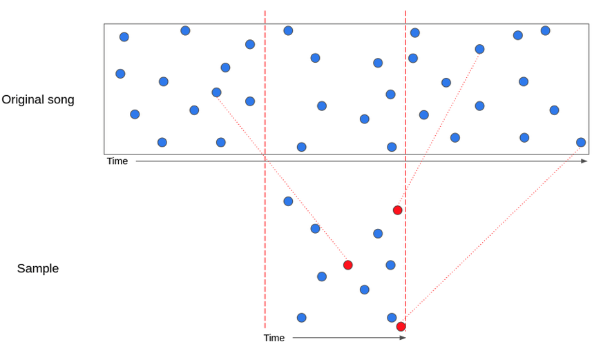
Comparación de pistas de audio
Shazam (2003)
- Score: Calcular el histograma de diferencias de tiempo para cada par de fingerprints matcheados. El score de un matching es el tamaño de la barra más alta.

Distorsiones de pistas de audio
- Pista original
- Ruido
- Reverberación
- Filtro low-pass/high-pass
- Cambio de tempo
- Cambio de pitch
Distorsiones de pistas de audio
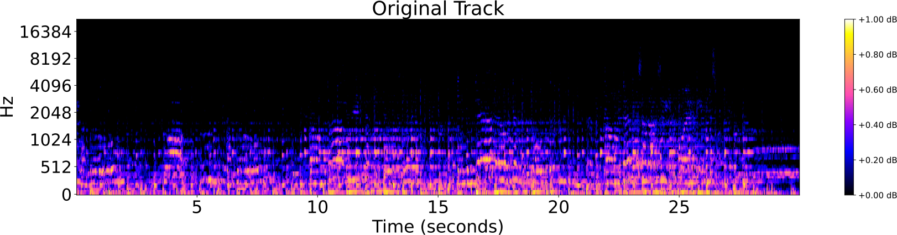


Identificación de audio
Estudio de caso: Shazam
- El algoritmo tiene buena performance para distorsiones rígidas de pistas de audio, como:
- adición de ruido,
- filtro high-pass/low-pass,
- reverberación.
- El algoritmo tiene mala performance para distorsiones topológicas de pistas de audio, como:
- cambio de pitch,
- cambio de tempo,
- distorsiones mixtas; por ejemplo Music Obfuscator de Ben Grosser (2015).
Identificación topológica de audio
Topología de espectrogramas


Topología de espectrogramas
Mel-espectrogramas como complejos cúbicos filtrados
Topología de espectrogramas
Mel-espectrogramas como complejos cúbicos filtrados
Fingerprints topológicos
Fingerprints topológicos
Sea $ S$ el mel-espectrograma de una pista de audio $s:[0,T]\to \mathbb{R}$.
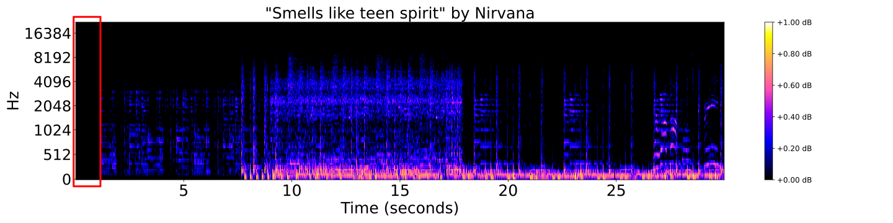- Descomposiciones espectrales locales: Dada una ventana $\omega$ y un coeficiente de overlapping $0<\tau<1$, subdividimos $ S$ en un conjunto de ventanas solapadas $W_0, W_1, \dots, W_k$ de duración $\omega$ segundos. Normalizamos el rango de cada ventana como $\frac{W_i-\min(W_i)}{\max(W_i)-\min(W_i)}.$ Sea $t_i$ el punto medio de $W_i$.

 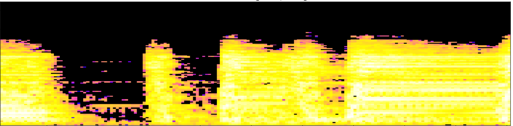
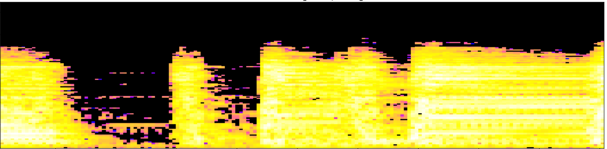


Fingerprints topológicos
Sea $ S$ el mel-espectrograma de una pista de audio $s:[0,T]\to \mathbb{R}$.
- Firmas de persistencia locales: Para cada ventana normalizada $W_i$, calculamos la homología persistente del complejo cúbico filtrado asociado, para dimensiones 0 y 1. Codificamos los barcodes persistentes como una familia de curvas de Betti $\{\beta_{i,0}\}_{i=0}^{k}$ y $\{\beta_{i,1}\}_{i=0}^{k}$ para dimensiones 0 y 1, respectivamente.


 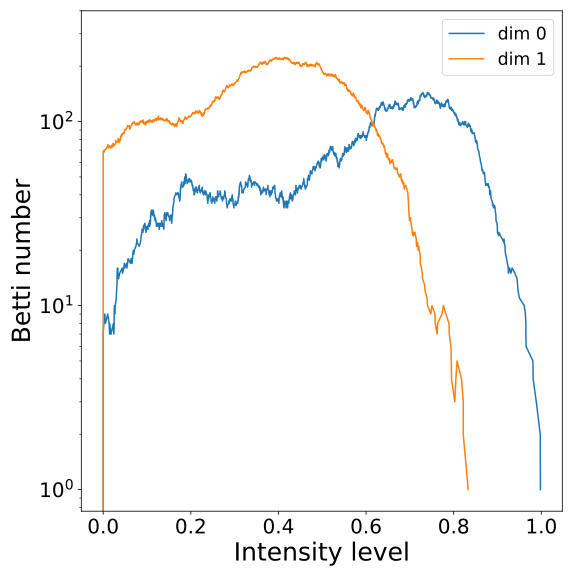
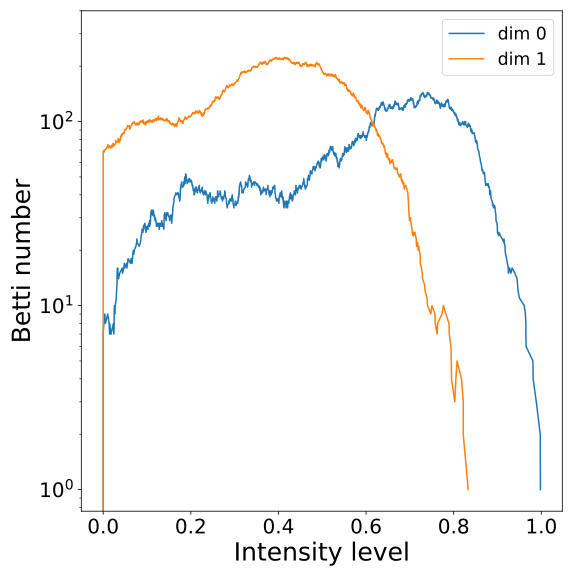

Fingerprints topológicos
Sea $ S$ el mel-espectrograma de una pista de audio $s:[0,T]\to \mathbb{R}$.
- Fingerprint: La huella topológica de la pista $s$ con la resolución dada por los parámetros $\omega$ y $\tau$ se define como el conjunto de triples ${(t_i, \beta_{i,0}, \beta_{i,1})}_{i=0}^{k}$.
$~~~~~~~~~~~~t_0~~~~~~~~~~~~~~~~~~~~~~~t_1~~~~~~~~~~~~~~~~~~~~t_2~~~~~~~~~~~~~~~~~~~~~t_3~~~~~~~~~~~~~~~~~~~~~~t_4~~~~~~~~~~~~~~~~~~~~~t_5 \dots$
Comparando fingerprints
Comparando fingerprints
- Distancia: Sean $s$, $s'$ dos pistas de audio y ${(t_i, \beta_{i,0}, \beta_{i,1})}_{i=0}^{k}, {(t_j', \beta'_{j,0}, \beta'_{j,1})}_{j=0}^{k'}$ sus fingerprints asociados.


$~~~~$


$~~~~~~~~~~~~~~~~t_0~~~~~~~~~~~~~~~~t_1~~~~~~~~~~~~~~~~t_2~~~~~~~~~~~~~~~t_3~~~~~~~~~~~~~~~t_4~~\dots~~~~~~~~~~~~~~~~~~t'_0~~~~~~~~~~~~~~~~t'_1~~~~~~~~~~~~~~~~t'_2~~~~~~~~~~~~~~~~t'_3~~~~~~~~~~~~~~~t'_4~~\dots$
Comparando fingerprints
- Distancia: Sean $s$, $s'$ dos pistas de audio y ${(t_i, \beta_{i,0}, \beta_{i,1})}_{i=0}^{k}, {(t_j', \beta'_{j,0}, \beta'_{j,1})}_{j=0}^{k'}$ sus fingerprints asociados.
Para cada dimensión homológica $d=0,1$, la matriz de distancias las curvas de Betti $d$, $M_d$, entre $s$ y $s'$ se define como \[ (M_d)_{i,j} = \Vert \beta_{i,d} - \beta'_{j,d} \Vert_{L^1}. \]
Definimos la distancia entre cada par de ventanas $W_i$ y $W_j'$ como \[ C_{i,j} = \lambda (M_0)_{i,j} + (1-\lambda) (M_1)_{i,j} \] para un parámetro $0 \leq \lambda \leq 1$.

Comparando fingerprints
- Matching: Comparamos $s$ y $s'$ mediante un matching de costo mínimo en $C$.

Comparando fingerprints
- Score: Cuantificamos el grado de preservación del orden temporal en el matching. Supongamos que $k < k'$. Sea $P = \{(t_1, t'_{j_1}), \dots, (t_i, t'_{j_k})\}$ el conjunto de puntos medios de las ventanas matcheadas, con $t_1< t_2< \dots < t_k$.

Comparando fingerprints
- Score: Como antes, definimos $P$.
Para $m \geq 1$, calculamos $\bar t'_{j_i} = \mathrm{median}\{t_{j_{i-m}},\dots, t_{j_{i-1}}, t_{j_i}, t_{j_{i+1}}, \dots, t_{j_{i+m}}\}$, la mediana móvil en $t_{j_i}$. Consideramos $\bar P = \{(t_i, \bar t'_{j_i}): i=1,\dots,k\}$.

Comparando fingerprints
- Score: Definimos $P$ y la mediana móvil como antes.
Evaluamos la dependencia funcional monótona creciente de los puntos en $P$ como \[ \rho_{\bar P} = \mathrm{Pearson}\{(t_i), (\bar t'_{j_i})\}. \]


Resultados Experimentales
Resultados Experimentales
Music Obfuscator by Ben Grosser
| Song | Shazam (60 sec) |
|---|---|
| Smells Like Teen Spirit | No |
| Get Lucky | No |
| Giant Steps | No |
| Stairway to Heaven | Yes |
| Headlines | Yes |
| Blue in Green | No |
| You’re Gonna Leave | No |
| Blue Ocean Floor | No |
Resultados Experimentales
Music Obfuscator by Ben Grosser
| Song | Shazam (60 sec) | Correlation (60-30 sec) |
|---|---|---|
| Smells Like Teen Spirit | No | 0.83208 |
| Get Lucky | No | 0.99906 |
| Giant Steps | No | 0.83904 |
| Stairway to Heaven | Yes | 0.88533 |
| Headlines | Yes | 0.91173 |
| Blue in Green | No | 0.89276 |
| You’re Gonna Leave | No | 0.71766 |
| Blue Ocean Floor | Yes | 0.51332 |
Resultados Experimentales
Spotify Database + PySOX Transformer
 Spotify Web API. Dataset de fragmentos de 30 segundos de ~135.000 canciones.
Spotify Web API. Dataset de fragmentos de 30 segundos de ~135.000 canciones.- PySOX Transformer. Cada pista de audio fue manipulada según siete tipos de distorsiones con distintos grados de magnitud.
- Pares positivos y negativos. Para cada tipo de distorsión y grado, generamos 1000 pares positivos al azar (36000 en total) y 36000 pares negativos.
| Tipo de distorsión | Grado |
|---|---|
| Filtro low-pass | 200, 400, 800, 1600, 2000 |
| Filtro high-pass | 50, 100, 200, 400, 800, 1200 |
| Ruido blanco | 0.05, 0.10, 1.20, 0.40 |
| Ruido rosa | 0.05, 0.10, 1.20, 0.40 |
| Reverberación | 25, 50, 75, 100 |
| Tempo | 0.50, 0.80, 1.1, 1.2, 1.50, 2.00 |
| Pitch | -8, -4, -2, -1, 1, 2, 4, 8 |
Resultados Experimentales
(Accuracy)

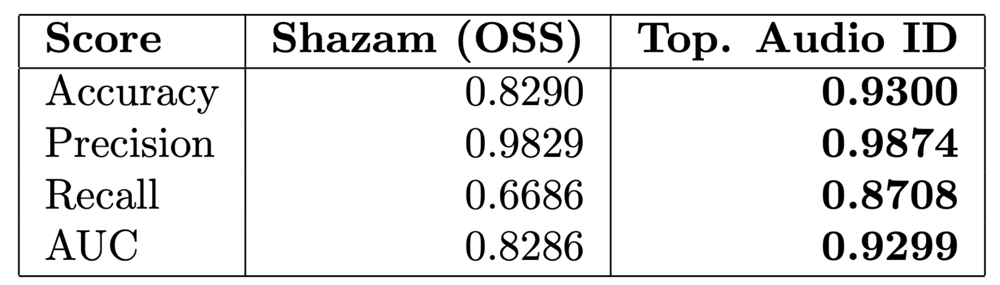